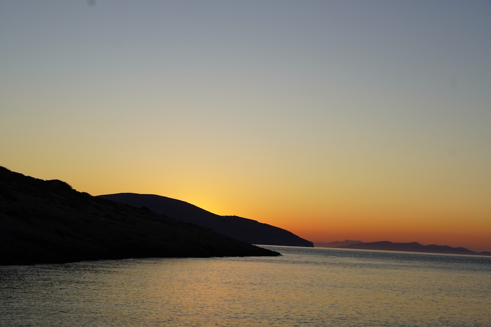
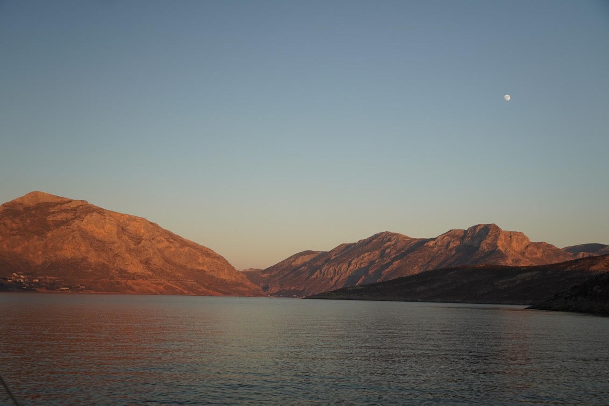
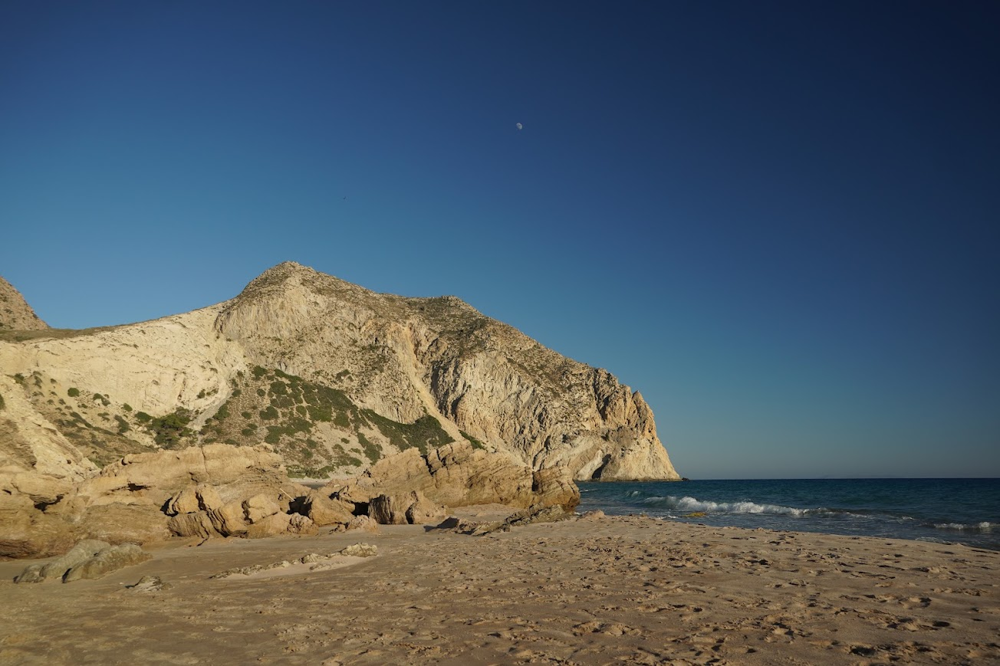
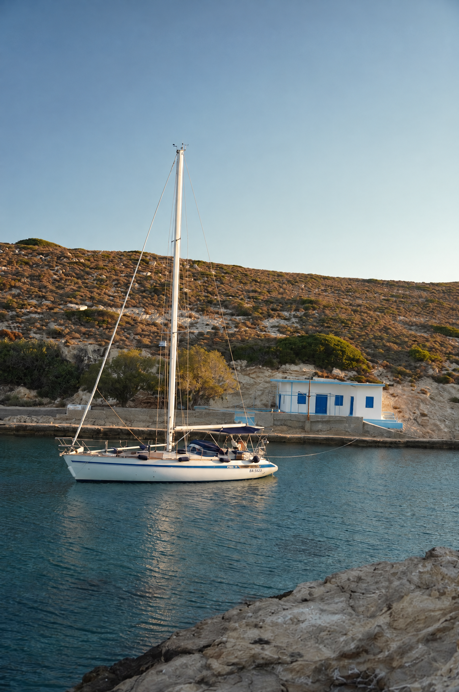
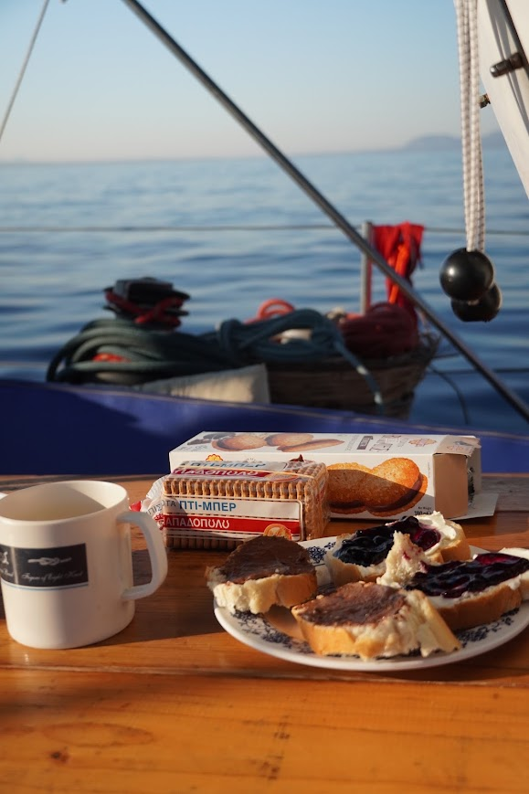
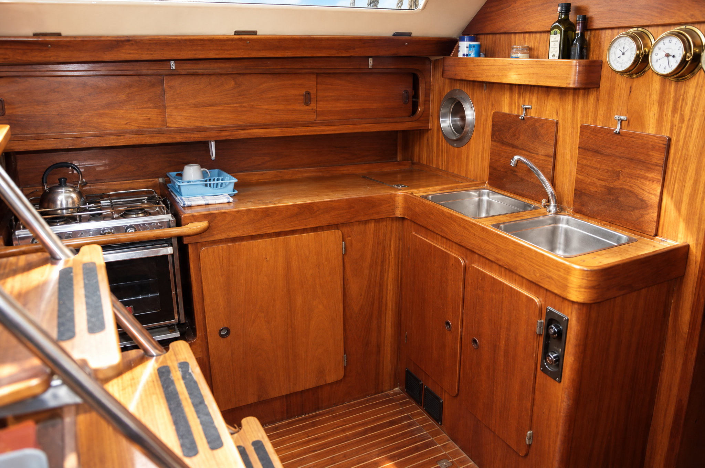
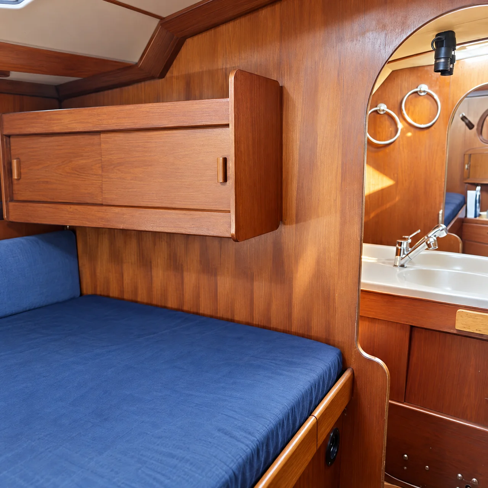
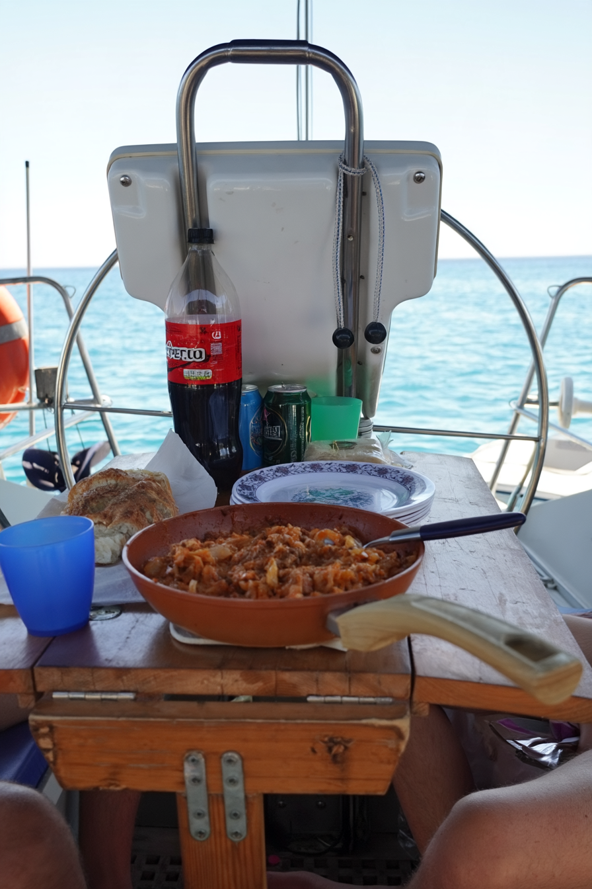
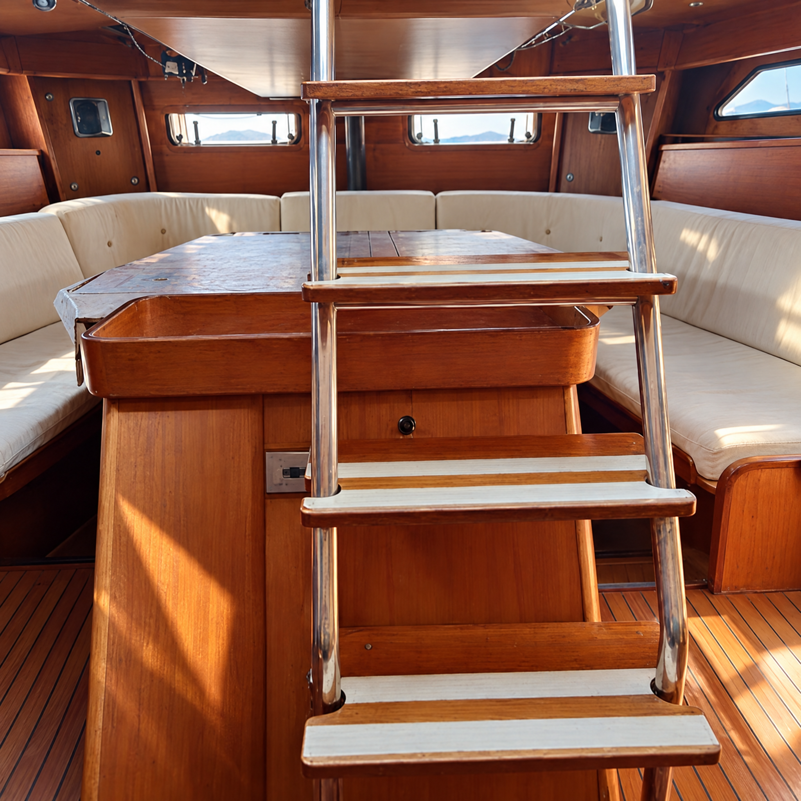
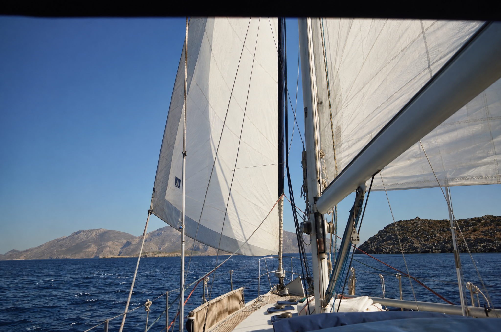

37°08′ N · 26°51′ E
Leros
si parte da qui
Ci si sveglia dove abbiamo gettato l’ancora, si fa colazione in pozzetto e si parte quando c’è vento.
Alcuni giorni si naviga di più, altri quasi per niente.
Si nuota, si scende sulle isole, si cena nelle taverne e poi si torna a bordo.

37°08′ N · 26°51′ E
si parte da qui
La rotta cambia.
Dipende dal vento, dal mare
e da dove abbiamo voglia di fermarci.

Vathy · Pserimos

ultima tappa







€ 599 / persona
Chiedi disponibilità →No.
In barca, principalmente in rada o in porto.
No. Dipende dal vento e dalle condizioni del mare.
Sì.
Al massimo sei ospiti, più lo skipper.
Poco. Una borsa morbida (niente trolley rigidi), costume, crema solare, un asciugamano, una felpa per la sera e scarpe che non lascino segni in coperta.

Ci vediamo a bordo.
Scrivi per sapere quando partiamo →